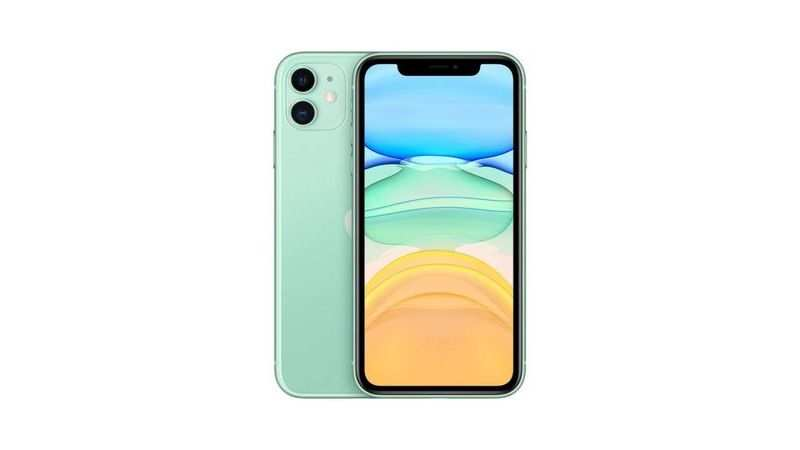
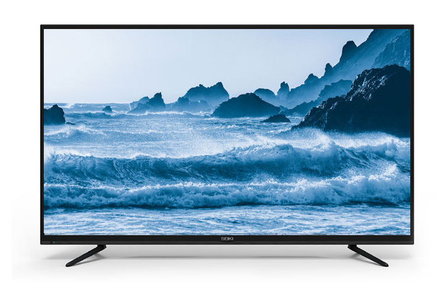
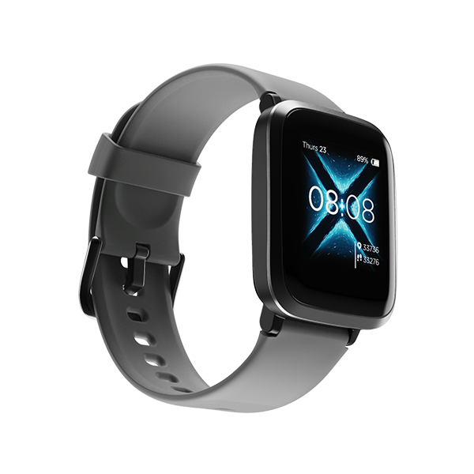
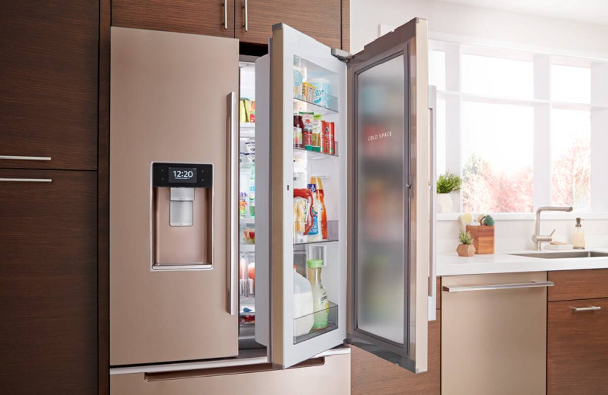
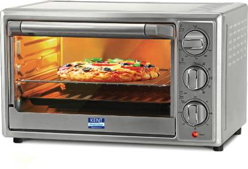

-
Laptop
A laptop, laptop computer, or notebook computer is a small, portable personal computer (PC) with a screen and alphanumeric keyboard
-
Smart Phone
A smartphone is a cell phone that allows you to do more than make phone calls and send text messages. Smartphones can browse the Internet and run software programs like a computer.
-
Television
Telegram television (also known as a TV) is a machine with a screen. Televisions receive broadcasting signals and change them into pictures and sound.
-
Smart watch
Smartwatch, a small smartphonelike device worn on the wrist. Many smartwatches are connected to a smartphone that notifies the user of incoming calls, e-mail messages, and notifications from applications
-
Refrigerator
A refrigerator is a machine used for keeping things cold. ... People put food and drinks in it, to keep those items cold or good (unspoiled) for a longer time.
-
Oven
Ovens are used as kitchen appliances for roasting and heating. Foods normally cooked in this manner include meat, casseroles and baked goods such as bread, cake and other desserts.